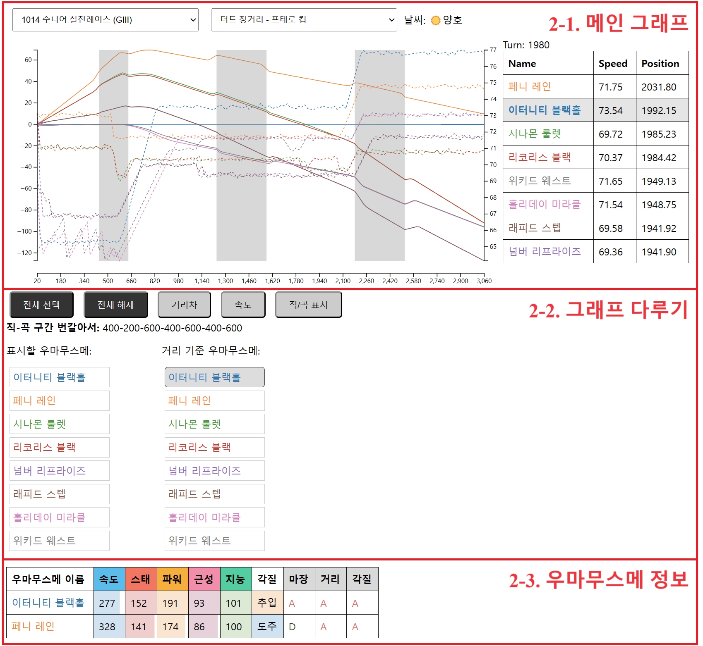

현재 작성 중입니다.
목차
0. 개요
반갑습니다! 경주 결과 가시화 도구에 오신 것을 환영합니다.
본 웹사이트는 호르트 아카데미의 트레이너 및 우마무스메를 위한 데이터 분석을 지원하기 위해 개발되었습니다.
이 페이지에서 설명하는 사항 외에도 추가로 궁금하거나 필요하신 사항이 있으시다면, 호르트 아카데미 22기생 후르 알-리야흐를 통하실 경우 가장 빠르게 대응이 가능합니다.
1. 경주 선택 메뉴
홈 페이지에 접속하실 경우, 가장 먼저 두 개의 버튼이 여러분을 맞이합니다.
이 버튼을 클릭하여 원하는 경기를 선택함으로써, 해당 경기에 대한 상세한 정보 조회와 분석이 가능합니다.
- 1. 경주 일자 선택을 클릭한 뒤, 경주가 이루어진 날짜를 선택합니다.
- 2. 이후 경주 종목 선택 란이 활성화됩니다. 이를 클릭합니다.
- 3. 분석을 원하는 경주 종목을 클릭해 선택합니다.
2. 레이스 정보
보고 싶은 경기를 설정하게 되면, 먼저 아래와 같은 레이스 정보가 나타납니다.
우리는 이 단락에서, 레이스 정보를 3개의 구역으로 나누어 살펴볼 것입니다: 메인 그래프, 그래프 다루기, 우마무스메 정보.
2-1. 메인 그래프
얼핏 보면 조금 복잡해 보이기도 하지만, 그래도 찬찬히 뜯어보도록 합시다.
메인 그래프는 크게 세 개의 구역(1, 2~7, 8)으로 구분지을 수 있으며, 아래 그림에서 표기한 것과 같이 여덟 가지의 세부 항목이 있습니다.
- 1. 해당 경기의 날씨 정보입니다. 날씨는 ☀️양호, 💧다습, 🌧️포화, ⚠️불량으로 나뉩니다.
-
2. 그래프에서 실선으로 그려진 부분은 거리의 기준이 되는 우마무스메로부터 해당 우마무스메까지의 거리를 나타냅니다. 정확한 수치는 좌측 y축(5번)을 따릅니다.
거리의 기준이 되는 우마무스메는 자신과의 거리가 언제나 0이므로, x축과 평행한 일직선으로 나타나게 됩니다.
위에 나타난 그래프를 기준으로 설명을 진행하겠습니다. 현재 거리의 기준이 되는 우마무스메는 이터니티 블랙홀인 상태입니다.
주황색 실선은 이터니티 블랙홀과 페니 레인 사이의 거리를 의미합니다.
예를 들어, 약 500턴 부근에서, 주황색 실선이 파란색 실선보다 위에 있으므로, 해당 턴에 페니 레인이 이터니티 블랙홀보다 앞서고 있음을 의미합니다.
또한, 페니 레인은 이터니티 블랙홀보다 약 60미터 정도 앞서고 있는 상황입니다.
-
3. 그래프에서 점선으로 그려진 부분은 각 우마무스메의 해당 턴에서의 속도를 나타냅니다. 정확한 수치는 우측 y축(6번)을 따릅니다
예를 들어, 위 그래프에서 이터니티 블랙홀의 최종 속도는 약 77km/h로 확인됩니다.
-
4. 해당 경기에서 거리의 기준이 되는 우마무스메의 직선, 곡선 구간을 의미합니다. 짙게 칠해진 부분은 곡선 구간, 칠해지지 않은 부분은 직선 구간입니다.
거리의 기준이 되는 우마무스메를 변경할 경우, 직선/곡선 구간도 해당 우마무스메의 기준으로 변경됩니다.
- 5. 좌측에 위치한 y축은 거리의 기준이 되는 우마무스메와 다른 우마무스메 사이의 거리를 의미합니다. 단위는 m입니다.
- 6. 우측에 위치한 y축은 각 우마무스메의 속도를 의미합니다. 단위는 km/h입니다.
- 7. 하단에 위치한 x축은 턴(turn)을 의미합니다. 20턴이 1초에 해당합니다. 거리를 의미하는 것이 아님에 유의해주세요.
-
8. 그래프와 함께, 특정 턴에 대한 상세한 정보가 표로 제공됩니다. 그래프에 커서를 가져다 댐으로써 원하는 턴으로 설정이 가능합니다.
우마무스메 이름의 색은 그래프에 나타난 선의 색과 동일합니다.
Name은 우마무스메의 이름, Speed는 해당 턴에서의 우마무스메의 속도, 그리고 Position은 해당 턴에서의 우마무스메의 위치를 나타냅니다.